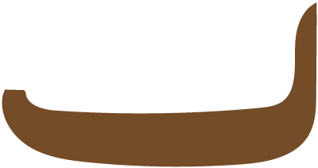

Despising him, Māui’s four brothers conspired to leave
him behind when they went out fishing. Overhearing their
plans, Māui secretly made a fishhook from a magical
ancestral jawbone. Then one night he crept into his brothers'
canoe and hid under the floorboards.
It wasn't until the brothers were far out of sight of land
and had filled the bottom of their canoe with fish that Māui
revealed himself. Then he took out his magic fishhook and
threw it over the side of the canoe, chanting powerful
incantations as he did so.
The hook went deeper and deeper into the sea until Māui felt
the hook< had touched something. He tugged gently and far below
the hook caught fast. It was a huge fish!< Together with his
brothers, Māui brought the fish to the surface.
Māui cautioned his brothers to wait until he had appeased Tangaroa
the god of the sea before they cut into the fish. They grew tired
of waiting and began to carve out pieces for themselves.
These are now the many valleys, mountains, lakes and rocky
coastlines of the North Island.


